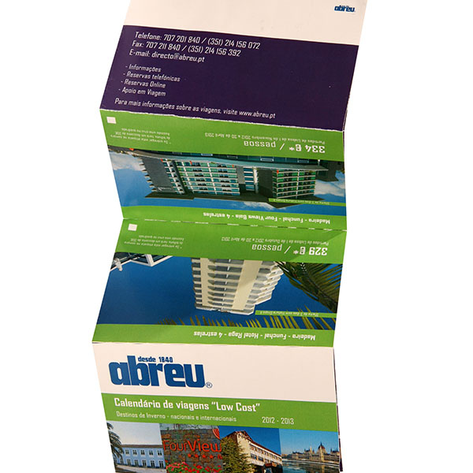
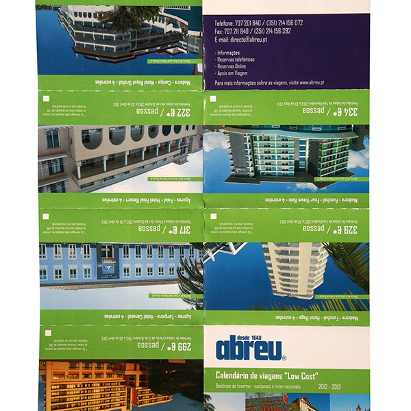
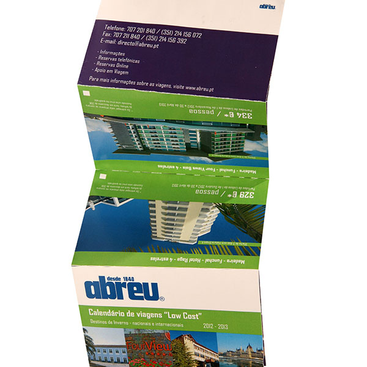
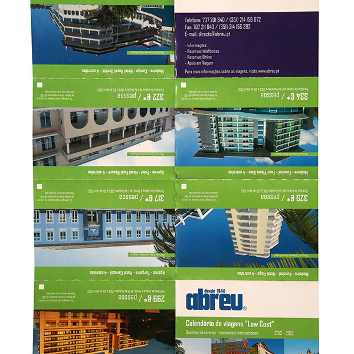
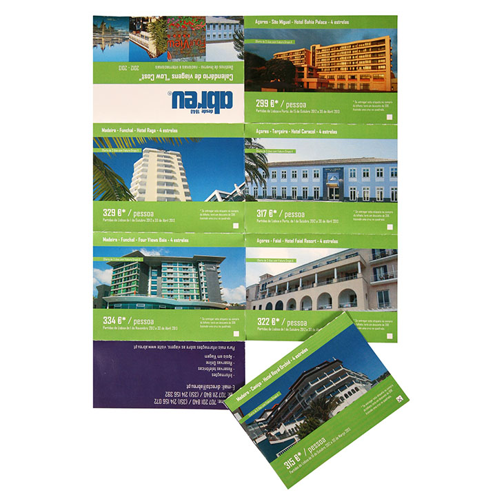
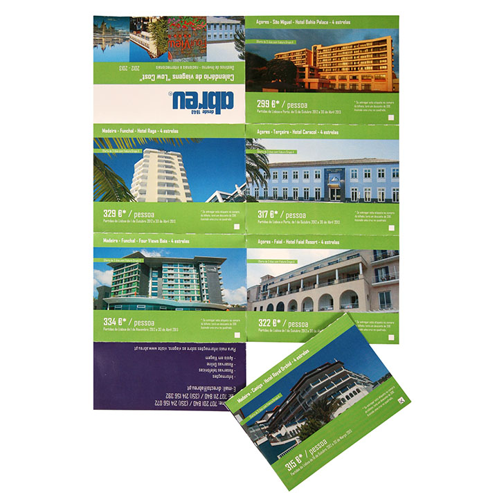
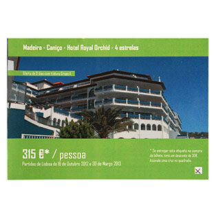
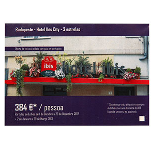
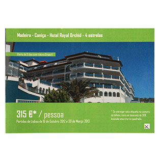
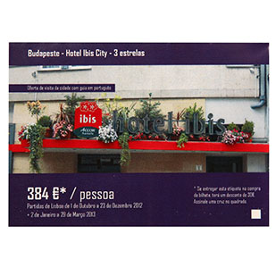

Low Cost Calendar - Agências Abreu
Este projeto foi desenvolvido no ambito da cadeira de Projeto III, no Instituto Politécnico do Cávado e do Ave. Teve como objetivo o desenvolvimento de um calendário para uma empresa existente. Foi escolhida a empresa "Agências Abreu", uma das agências mais conhecidas de Portugal. O objetivo do calendário consistiu na recolha de destinos disponíveis com preços baixos, que vão desde o ano 2012 a 2013, pudendo a pessoa verificar rapidamente quais as viagens mais baratas, sem perder muito tempo a procurar no site oficial. É denominado de "Calendário Low Cost", e possuí destinos nacionais e internacionais. Dois suportes foram desenvolvidos: um desdobrável com um conjunto de bilhetes, que estariam disponiveis diretamente nas agências de viagem, e uma aplicação interativa que estaria disponível no site oficial. Os bilhetes podem ser separados, pudendo o consumidor escolher e comprar o bilhete desejado, e ao mesmo tempo, ter um desconto.
 



 

 


